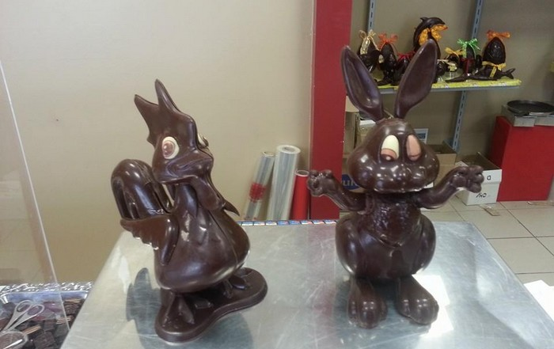

Les produits
Chocolats
Découvrez un assortiment de délicieux chocolats, qu'ils soient au cassis, citron vert, pina coladas, rhum raisin, menthe ou même basilic. Venez faire votre sélection à la boutique, Jordan sera là pour vous conseiller. Un peu de plaisir pour les yeux :


Et ce n'est qu'un petit aperçu...
Pâtes de fruits, Fruits Confits et Tendre Nougat
Parce que le gourmandise ne s'arrête pas aux portes du chocolat, découvrez d'autres douceurs sucrées faites maison.